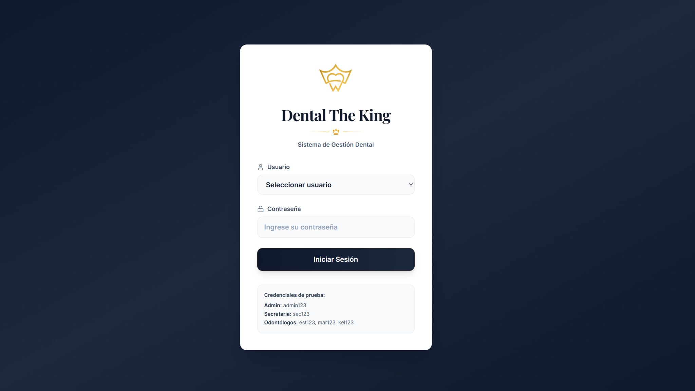
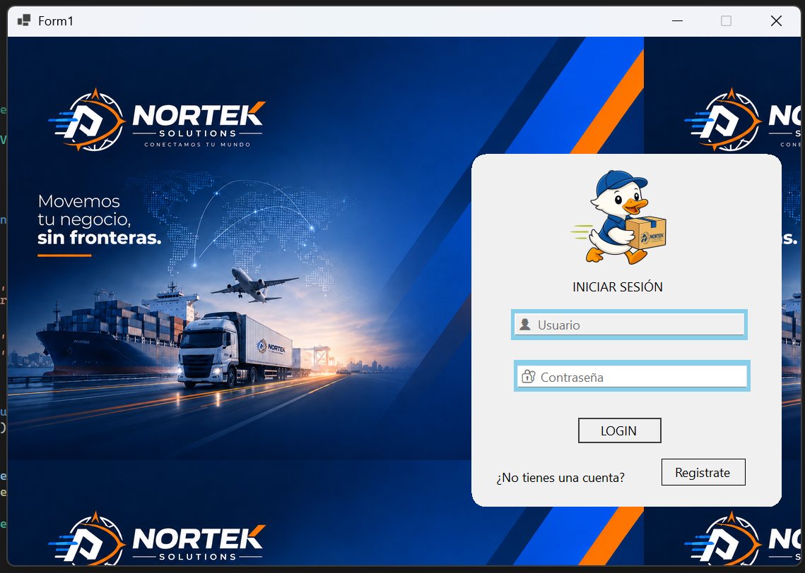

Sobre mí
Soy estudiante de 8vo semestre / 4to año de Ingeniería en Sistemas. Me apasiona el diseño web, las bases de datos y el desarrollo de sistemas. Sueño con crear sistemas funcionales, tanto web como locales, que ayuden a negocios y empresas a crecer.
8vo Semestre
4to año
Ingeniería en
Sistemas
Apasionada por
la tecnología
Meta
Crear soluciones innovadoras
Mis Proyectos

Sistema Dental The King
Sistema de gestión dental para clínicas y consultorios. Control de pacientes, citas, odontólogos y más.
Escritorio
C#
SQL Server
Windows Forms
Ver proyecto →

Sistema de Reparto Nortek
Sistema de gestión de reparto y paquetería. Control de envíos, usuarios, rutas y más.
Escritorio
C#
MySQL
Windows Forms
Ver proyecto →